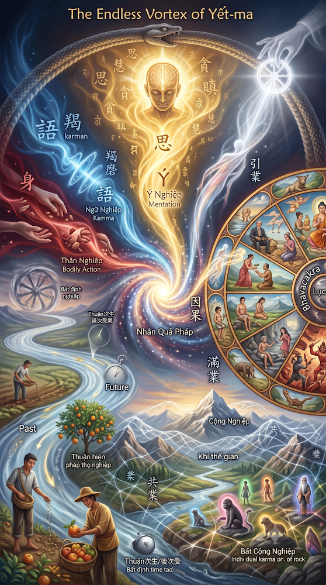
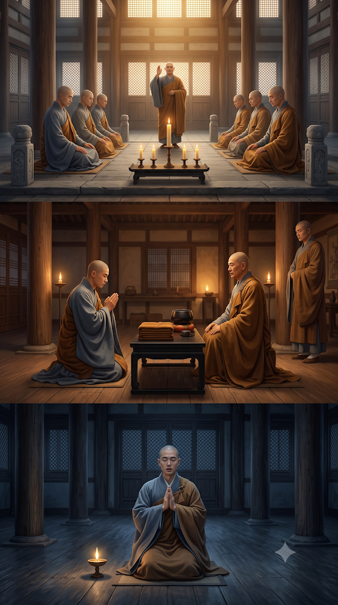
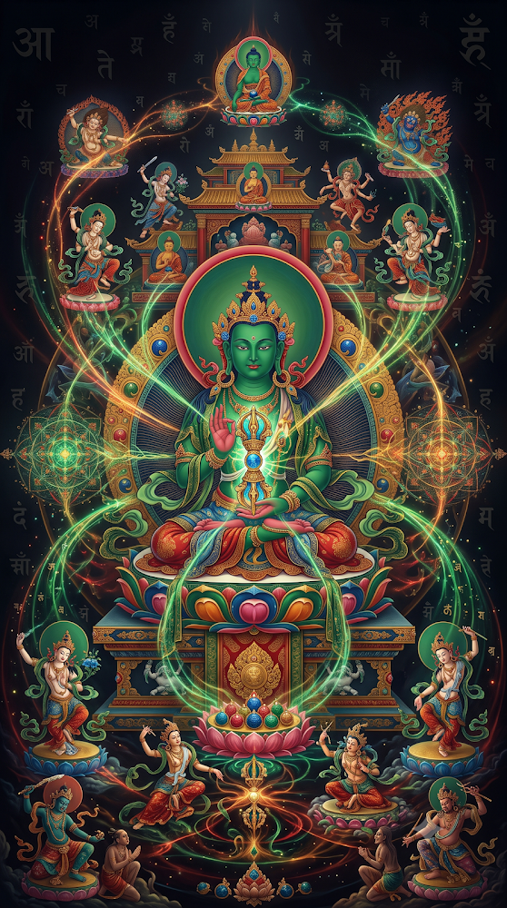

梵語 karman，巴利語 kamma。
Phạn ngữ là karman, Pāli là kamma.
*******
Nghĩa thứ 01 của Yết-ma
意譯作「業」。
Dịch ý là nghiệp.
意指所作、事、辦事、辦事作法、行為等。
Chỉ cho việc làm (sở tác), sự việc, việc điều hành sự vụ (biện sự), cách thức tiến hành sự vụ (biện sự tác pháp), hành vi, v.v…
含有善惡、苦樂果報之意味，亦即與因果關係相結合之一種持續不斷之作用力。
Hàm ngụ ý nghĩa quả báo thiện ác, khổ vui; tức là một thứ lực tác dụng liên tục không gián đoạn, gắn kết với quan hệ nhân quả.
業，原係流行於印度社會之一般性觀念，對印度思想影響頗大，後為佛教基本教義之一，即是一切萬有基於因果之法而生。
Nghiệp vốn là một quan điểm phổ thông lưu hành trong xã hội Ấn Độ cổ đại, có ảnh hưởng khá lớn đối với tư tưởng Ấn Độ; về sau trở thành một trong những giáo lý căn bản của Phật giáo, chủ trương hết thảy vạn hữu đều nương nơi pháp nhân quả mà sinh khởi.
依據大毘婆沙論卷一一三，業之定義有二說：其一，以作用、任持七眾法式、能分別愛與非愛之果等三義為業；其二，以作用（即語業），行動（即身業）、造作（即意業）等三義為業。
Y cứ Đại Tỳ-bà-sa luận quyển 113, định nghĩa về nghiệp có 02 thuyết: (01) thuyết lấy 03 nghĩa làm nghiệp: tác dụng, nhậm trì pháp thức của 07 chúng, năng lực phân biệt quả khả ái và quả phi khả ái; (02) thuyết lấy 03 nghĩa làm nghiệp: tác dụng (tức ngữ nghiệp), hành động (tức thân nghiệp), tạo tác (tức ý nghiệp).
業之種類雖多，不外乎身業、語業、意業三者，中阿含經卷三以意業最重，藉此標示佛教之動機論。
Chủng loại của nghiệp tu nhiều, nhưng không ngoài 03 thứ là thân nghiệp, ngữ nghiệp, ý nghiệp; trong Kinh Trung A-hàm quyển 03 xem ý nghiệp là nặng nhất, nhân đó nêu rõ động cơ (động cơ luận) của Phật giáo.
此外，引一生果報（或生人界，或生畜生界等）之業，稱為引業；若生於人界，個體之間復以不同方式（如男女、貴賤、賢愚、美醜等）完成，是為滿業。
Ngoài ra, nghiệp dẫn khởi quả báo của 01 đời (hoặc sinh vào cõi người, hoặc sinh vào cõi súc sinh v.v…) gọi là dẫn nghiệp; nếu đã sinh vào cõi người, thì giữa các cá thể lại được hoàn thành theo những phương thức khác nhau (như nam nữ, sang hèn, hiền ngu, đẹp xấu v.v…) đó là mãn nghiệp.
是故，引業能引總報，滿業則圓滿別報。
Cho nên, dẫn nghiệp có thể dẫn khởi tổng báo, còn mãn nghiệp thì làm viên mãn biệt báo.
其他，如山河、大地之器世間，為諸生物共通之果報，稱為共業；各生物之間復有不同之果報，即稱不共業。
Lại như khí thế gian, gồm núi sông đại địa, là quả báo chung của các loài hữu tình, gọi là cộng nghiệp; giữa mỗi loài lại có những quả báo khác nhau, gọi là bất cộng nghiệp.
又以受報時限之不同，業亦可分為順現法受業（於現身受報）、順次生受業（於次生受報）、順後次受業（於次生以後受報）、不定業等。
Lại căn cứ vào thời hạn thọ báo khác nhau, nghiệp cũng có thể chia thành: thuận hiện pháp thọ nghiệp (thọ báo ngay nơi thân hiện tại), thuận thứ sinh thọ nghiệp (thọ báo ở đời kế tiếp), thuận hậu thứ thọ nghiệp (thọ báo từ sau đời kế tiếp trở đi), bất định nghiệp v.v…
由業之觀念所產生之輪迴思想，主要在強調人類對未來應有之努力，然因此反緣生一宿業之說（即前世之業招後世之報），此一宿命論已與業之原始意義相悖。
Tư tưởng luân hồi phát sinh từ quan niệm về nghiệp, chủ yếu nhấn mạnh nỗ lực mà con người cần phải có đối với tương lai; tuy nhiên thuyết này làm nảy sinh thuyết túc nghiệp (tức nghiệp đời trước chiêu cảm quả báo đời sau), và thuyết túc mệnh này đã trái với ý nghĩa nguyên thủy của nghiệp.
（參閱「業」6890）
(Tham khảo mục “nghiệp” trang 6890)
  


*******
Nghĩa thứ 02 của Yết-ma
於受戒、懺悔、結界等有關戒律行事之場合，意指生善滅惡之作法。
[Yết-ma] trong những trường hợp hành sự liên quan đến giới luật như thọ giới, sám hối, kết giới v.v…, chỉ cho tác pháp sinh thiện diệt ác
受戒之際，受戒者因羯磨而得戒體。
Khi thọ giới, người thọ giới nhờ yết-ma mà đắc giới thể.
羯磨之內容包含法（羯磨之作法）、事（有關羯磨之所有事實）、人（與羯磨有關之人）、界（行羯磨之場所）等四者，一般稱為羯磨四法，分別言之：
Nội dung yết-ma gồm 04 phần: Pháp (cách thức tác pháp yết-ma), Sự (mọi sự việc liên quan đến yết-ma), Nhân (những người có liên quan đến yết-ma), Giới (nơi chốn cử hành yết-ma); thường gọi là Yết-ma tứ pháp, nay nói riêng từng thứ:
(1) 法，分為心念法、對首法、眾僧法三種。
Một là, Pháp --- chia làm 03 loại là tâm niệm pháp, đối thủ pháp, chúng Tăng pháp.
①心念法，乃自己獨自心想口念之法，適用於懺悔微小罪障之情況。又分三種：1.但心念法，即本來之心念法，不須對人，唯得自說，如懺輕微之突吉羅罪。共有三種。2.對首心念，本為對首之法，但因界內無人，而以心念秉法。共有七種，如說淨、受藥等事。3.眾法心念，本為眾僧法，但因界內無人，故以心念秉法。共有四種，如說戒、自恣等事。
① Tâm niệm pháp là pháp do tự mình, một mình, trong tâm nghĩ và ngoài miệng niệm, áp dụng cho các trường hợp sám hối các tội chướng nhỏ nhặt. Lại chia làm 03 loại:
- Đãn tâm niệm pháp: tức tâm niệm pháp theo nghĩa vốn có, không cần đối trước người khác, chỉ được tự mình nói, như sám hối tội Đột-cát-la nhẹ. Gồm có 03 trường hợp.
- Đối thủ tâm niệm vốn là pháp đối thủ, nhưng vì trong cương giới không có người để đối trước, nên dùng cách tâm niệm mà bỉnh pháp. Gồm có 07 trường hợp, như các việc thuyết tịnh, thọ dược.
- Chúng pháp tâm niệm là pháp của chúng Tăng, nhưng vì trong cương giới không có người đối trước, nên dùng cách tâm niệm mà bỉnh pháp. Gồm có 04 trường hợp, như các việc thuyết giới, tự tứ.
②對首法，係面對同法者二三人申白之法，適用於受三衣或一鉢為自己所有物之情況。又分兩種：1.但對首法，為當分之對首法，界中雖有多僧，僅須對首於一人乃至三人即可。共有二十九種，如受三衣、捨受鉢等事。2.眾法對首，本為眾僧法，以界中無人而開對首。有四種，與眾法心念相同。
② Đối thủ pháp là pháp đối trước hai, ba vị đồng pháp mà trình bạch, áp dụng cho trường hợp thọ ba y hoặc một bát làm vật sở hữu của riêng mình. Lại chia làm hai loại:
- Đãn đối thủ pháp là pháp đối thủ đúng phần vị của nó (đương phần). Trong cương giới tuy có nhiều vị Tăng, nhưng chỉ cần đối trước một người cho đến ba người là được. Gồm có 29 trường hợp, như các việc tho ba y, xả bát và thọ bát v.v…
- Chúng pháp đối thủ vốn là pháp của chúng Tăng, nhưng vì trong cương giới không có người nên mới khai cho làm pháp đối thủ. Có 04 trường hợp, giống với chúng pháp tâm niệm.
③眾僧法，即指向四人以上（即僧伽）申白之法，適用於布薩、自恣或受戒等重要行事之情況，為滅罪生善其力最強者。又分三種：1.單白法，又稱白羯磨，即一度告知僧眾，經常施於慣例、事關輕微或已有嚴格規定不得提出異議等情況。共有三十九種，如說戒、行鉢、剃髮等事。2.白二法，又稱白二羯磨，即一度告知（一白）僧眾、一度問其可否（一羯磨），經常用於結界等場合。共有五十七種，如離衣、受日等事。3.白四法，又作一白三羯磨，即一度告知僧眾（一白），三度問可否（三羯磨），經常用於受具足戒或懺悔重罪（如僧殘罪等）之情況。此外，授具足戒之際，授白四羯磨作法者，稱為羯磨師（羯磨阿闍棃）。依事而計，以上所舉加以比丘之二法，羯磨合計一百八十三法（一說一百八十四法），但一般以百一羯磨稱之，蓋以「百」表示滿、眾之數，意指各一法皆包含一羯磨。但依十誦律所傳者，實際僅有百一羯磨。
③ Chúng tăng pháp: tức pháp trình bạch trước bốn người trở lên (tức Tăng-già), áp dụng cho những trường hợp hành sự trọng yếu như bố-tát, tự tứ hoặc thọ giới v.v…, là pháp có sức diệt tội sinh thiện mạnh nhất. Lại chia làm ba loại:
- Đơn bạch pháp, cũng gọi là bạch yết-ma: tức chỉ một lần bạch cho chúng Tăng biết, thường áp dụng cho các trường hợp thuộc thông lệ, sự việc nhỏ nhặt, hoặc đã có quy định nghiêm ngặt nên không được nêu dị nghị. Gồm có 39 trường hợp, như các việc thuyết giới, hành bát, cạo tóc.
- Bạch nhị pháp, cũng gọi bạch nhị yết-ma: tức một lần bạch cho chúng Tăng biết (nhất bạch), một lần hỏi chúng chấp nhận hay không (nhất yết-ma), thường dùng trong các trường hợp như kết giới. Gồm có 57 trường hợp, như các việc ly y, thọ nhật.
- Bạch tứ pháp, cũng gọi nhất bạch tam yết-ma: tức một lần bạch cho chúng Tăng biết (nhất bạch), ba lần hỏi chúng chấp nhận hay không (tam yết-ma), thường dùng trong các trường hợp thọ giới cụ túc hoặc sám hối tội nặng (như tội Tăng-tàn)
Ngoài ra, khi truyền giới cụ túc, vị thực hiện tác pháp bạch tứ yết-ma gọi là yết-ma sư (yết-ma A-xà-lê)
Tính theo sự thì những pháp nêu trên, cộng thêm hai pháp của Tỳ-kheo, Yết-ma gồm tất cả 183 pháp (một thuyết khác nói 184 pháp); nhưng thông thường vẫn gọi là bách nhất yết-ma, vì chữ ‘bách’ biểu thị con số đầy đủ và đông nhiều, ý nói mỗi một pháp đều bao hàm một yết-ma. Song theo chỗ truyền của Thập Tụng Luật thì thực tế chỉ có 101 yết-ma (đúng như tên gọi).
(2) 事，分為有情事、非情事、二合事等三種。有情事指有關有情（即眾生）之事，如突吉羅罪之責心悔乃至波逸提、四提舍尼、偷蘭遮等之懺悔；非情事指有關三衣一鉢等無生物之事，如三衣之分別法、鐵鉢之守持法等；若合以上兩方之事，是為二合事，如藥守持法，藥本身為非情事，病患則為有情事，即是二合事。所謂一百八十三法之事，皆不出於此三者。
Hai là, Sự --- Chia làm 3 loại: hữu tình sự, phi tình sự, nhị hợp sự.
- Hữu tình sự chỉ cho các việc liên quan đến hữu tình (tức chúng sinh), như pháp trách tâm hối đối với tột đột-cát-la, cho đến pháp sám hối đối với các tội ba-dật-đề, bốn pháp đề-xá-ni, thâu-lan-già v.v…
- Phi tình sự chỉ cho những việc liên quan đến các vật vô sinh như ba y, một bát; ví dụ pháp phân biệt ba y, pháp thủ trì bát sắt v.v…
- Nhị hợp sự: nếu hợp cả 02 mặt nói trên thì gọi là nhị hợp sự, như pháp thủ trì thuốc - bản thân thuốc thuộc phi tình sự, còn người bệnh thuộc hữu tình sự, đó là nhị hợp sự.
Sự của các gọi là 183 pháp đều không ra ngoài 03 loại này.
(3)人，分為一人、二三人、僧人（四人以上）。大凡「法」係隨人而分別其體。即上述所說之「心念法」為一人之法。於「界」無人時，方成此法。若有一人，即名「非法別眾」。對首法係二人面對，共同秉法。又有邊人則要問之，如三十捨懺必須問於邊人，九十單墮雖「但對」亦無妨；此即二三人之法。「眾法」係四人以上方秉法，此即「僧人」之法。界中有比丘則以全數聚集為法。若有一人未參加，則形成「非法別眾」。
Ba là, Nhân --- Gồm một người, hai hoặc ba người, và Tăng (tức bốn người trở lên).
- Đại phàm ‘pháp’ là tùy theo người mà phân biệt thể của nó. Tức ‘tâm niệm pháp’ đã nói ở trên là pháp của một người; khi trong cương giới không có ai thì pháp này mới thành tựu. Nếu trong cương giới có thêm một người mà vẫn tự tâm niệm thì gọi là ‘phi pháp biệt chúng’.
- Chúng pháp thì từ bốn người trở lên mới bỉnh pháp được; đây chính là pháp của hạng ‘tăng’. Hễ trong cương giới có Tỳ-kheo thì phải tập họp toàn số mới thành đúng pháp; nếu có một người không dự thì thành ‘phi pháp biệt chúng’.
***僧人 ở đây là hạng "tăng" trong phép phân theo số người, không phải "vị Tăng".
(4)界，即指進行羯磨之場所。有自然界、作法攝僧界之別。自然界即指自然成為僧眾住處之境界，如寺院等；以非特意劃定、布置而成，故又稱不作法界。對首、心念之二法及一人、二三人眾中之雜法、四人之自恣法等，皆可在自然界進行。作法界係指局限於一定之境域而施行結界法之三小界、三大界及戒場。小界係同一界內有不同意之人，或對法有呵難者時，另外結界而舉行受戒、自恣、說戒者。若為一時之方便而結界者，則於法事完了即解除。如四分律卷三十五所說「結已即解，非久住之法」即為其意。大界係僧眾常行之所，指人法二同之界，普通以一二O里為定量（下品）。戒場原係為恐因常常集合僧眾而引生困惱，故允許結之，用以行受戒、懺悔等法；但在說戒及自恣之時，則不得行之。
Bốn là, Giới --- tức chỉ nơi chốn tiến hành yết-ma. Có phân biệt Tự nhiên giới và Tác pháp nghiếp Tăng giới.
- Tự nhiên giới chỉ cho cảnh giới tự nhiên trở thành nơi cư trú của chúng Tăng, như chùa viện v.v…; vì không do cố ý hoạch định, bố trí mà thành, nên cũng gọi là bất tác pháp giới. Hai pháp đối thủ và tâm niệm các các tạp pháp trong chúng một người, hai - ba người, và pháp tự tứ của bốn người, đều có thể tiến hành trong tự nhiên giới.
- Tác pháp giới chỉ cho ba tiểu giới, ba đại giới và giới tràng - tức những giới được hạnh định trong một cảnh vực nhất định rồi thi hành pháp kết giới.
- Tiểu giới là khi trong cùng một cương giới có người không chấp thuận, hoặc có người ha nan (là người nêu lời phản bác để ngăn trở tác pháp yết-ma) đối với pháp, thì kết riêng một giới khác để cử hành thọ giới, tự tứ, thuyết giới. Nếu chỉ vì phương tiện nhất thời mà kết giới thì pháp sự xong là giải ngay. Như Tứ Phần Luật quyển 35 nói: “Kết rồi liền giải, chẳng phải pháp trụ lâu dài.” chính là ý này.
- Đại giới là nơi chúng Tăng thường cử hành pháp sự, chỉ cho giới mà người và pháp đều cùng chung (nhân pháp nhị đồng), thông thường lấy 120 lý làm định lượng (hạ phẩm).
- Giới tràng vốn là nơi e rằng thường xuyên phải tập hợp chúng Tăng sẽ sinh phiền nhiễu, nên mới cho phép kết, dùng để hành các pháp thọ giới, sám hối v.v…; nhưng khi thuyết giới và tự tứ thì không được cử hành tại đây.
***Nhân pháp nhị đồng: nhân đồng tức cùng một trú xứ; pháp đồng tức cùng một thuyết giới. Một trong ba đại giới, hai loại kia là pháp thực nhị đồng giới và pháp đồng thực biệt giới.
〔毘尼母論卷八、四分律卷三十三、卷三十九、摩訶僧祇律卷二十三、菩薩戒羯磨文、僧羯磨卷上、關中近出尼二種壇文夏坐雜十二事并雜事共卷前中後三記（出三藏記集卷十一所收）、受菩薩戒儀、菩薩戒義疏卷上、四分律刪繁補闕行事鈔卷上一、卷上二、卷上三、四分律行事鈔資持記卷上一之五、卷上二之一、四分律刪補隨機羯磨疏卷一、玄應音義卷十四〕
[X. Luận Tỳ Ni Mẫu quyển 08; Tứ Phần Luật quyển 33 & quyển 39; Ma Ha Tăng Kỳ Luật quyển 23; Bồ Tát Giới Yết Ma Văn; Tăng Yết Ma quyển thượng; ba bài ký sự (viết ở phần đầu, phần giữa và phần cuối) của quyển sách gộp chung các tài liệu vừa mới được dịch tại vùng Quan Trung, bao gồm hai loại văn bản nghi thức Giới đàn dành cho Tỳ-kheo-ni, 12 quy định tạp tuế về việc An cư kiết hạ cùng các tạp sự khác (tài liệu này được thu lục trong bộ Xuất Tam Tạng Ký Tập quyển 11); Thọ Bồ Tát Giới Nghi; Bồ Tát Giới Nghĩa Sớ quyển thượng, Tứ Phần Luật San Phồn Bổ Khuyết Hành Sự Sao quyển thượng 01 & quyển thượng 02 & quyển thượng 03; Tứ Phần Luật Hành Sự Sao Tư Trì Ký phần 05 quyển thượng 01 & phần 01 quyển thượng 02; Tứ Phần Luật San Bổ Tùy Cơ Yết Ma Sớ quyển 01; Huyền Ứng Âm Nghĩa quyển 14]
*******
Nghĩa thứ 03 của Yết-ma
在密教中，指如來之作業或諸尊之威儀事業，故有羯磨曼荼羅、羯磨部等語。此外，亦可作為「羯磨金剛」之略稱。
Trong Mật giáo, Yết-ma chỉ cho tác nghiệp của Như Lai, hoặc oai nghi sự nghiệp của chư Tôn, cho nên mới có các thuật ngữ như Yết-ma mạn-đồ-la, Yết-ma bộ v.v… Ngoài ra, đây còn là từ gọi tắt của ‘Yết-ma kim cang’.
（參閱「羯磨金剛」7707）
(Tham khảo mục “Yết-ma kim cang” trang 7707)
p7704
Trang 7704
***佛光大辭典
Phật Quang Đại Từ Điển
https://etext.fgs.org.tw/sutra_02.aspx